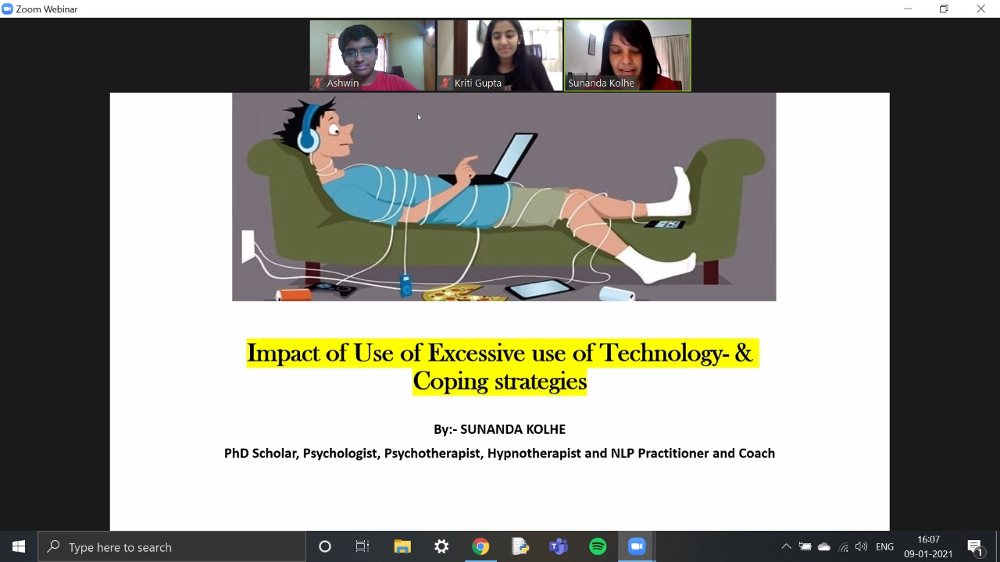

Webinar 1 screenshot

Webinar 2 screenshot

“Emotional Wellbeing for Teenagers” is an ongoing series by Unlock, which brings to light issues and problems that teenagers in this day and age are likely to face . Through monthly webinars, conducted by experienced mental health counsellors, we aim to spread awareness and have open discussions on mental health. The first webinar, held on 25th July 2020, focused on the understanding of emotional wellbeing and coping strategies to deal with the current Covid-19 pandemic. Our guest speaker Joy Basu, who is a counselor and corporate coach, discussed several coping mechanisms and self awareness tools for teenagers, in an hour-long session. We concluded the session with simple and easy exercises like the Johari Window, meant to improve personal relationships and increase self awareness.
The second webinar, held on 29th September 2020, focused on body issues. In a day and age where social media is used by 76% of all teenagers in the world, more than 80% of these teens find themselves comparing their bodies and looks to others on the same platform. Joy Basu and Tripti Gaonkar, from Unleash Possibilities, conducted an hour long session where they put out many polls, conducted many exercises, and gave us many strategies on how to feel confident of our own bodies :)
Smartphone overuse is something that most teenagers are familiar with in today’s day and age. UNLOCK recognized this problem and decided to host a webinar on the impact of excessive use of technology. The webinar was conducted by Dr. Sunanda Kolhe, a psychologist with many years of experience, on 9th January, 2021. In the webinar, Dr.Sunanda took everyone through what may count as technology use, what effects it may have on one’s life, the healthy 'screen time for a teenager and a 3 week plan to reduce one’s technology use. Attendees adopted the 3 week plan and got back to us with their before and after results! The session ended with Dr. Sunanda answering the various questions that came in throughout the webinar.
Performance pressure, something every student has faced. Pressure to do well at school has been shown to increase stress and anxiety in students, leading to poorer physical, social and emotional health. We at UNLOCK, recognised this problem and decided to host an interactive webinar with Mr. Nirmal Agarwal, career counselor and mentor with a BA from Stanford University. Over the webinar, Mr. Nirmal talked about the different sources of performance pressure, how to keep realistic goals for oneself, and answered the many questions attendees had throughout the session. We received great feedback that the session helped attendees immensely and inspired them to stay motivated!